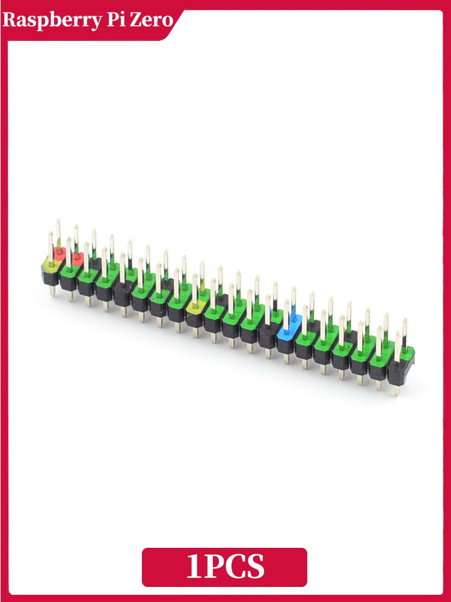

Пины 40PIN цветные для Raspberry Pi Zero 2W
РазъёмыЭто 40-контактный GPIO-разъём для Raspberry Pi Zero 2 W, обычно в виде цветной колодки/штырькового гребёнчатого разъёма для подключения модулей, проводов и HAT-совместимых плат. У Pi Zero 2 W штатный 40-pin GPIO header предусмотрен на плате, но сам разъём обычно не установлен и требует пайки.
Такой пин-хедер нужен для вывода питания, земли и сигнальных линий GPIO с Raspberry Pi Zero 2 W. Цветное исполнение обычно упрощает ориентацию по распиновке при сборке и отладке, особенно в учебных и макетных проектах. По назначению это тот же стандартный 40-контактный GPIO-разъём семейства Raspberry Pi, совместимый с аксессуарами, рассчитанными на 40-pin header. Важно, что у Zero 2 W на плате предусмотрены монтажные отверстия/площадки под этот разъём, но в базовой версии он часто не распаян. Используется для подключения датчиков, реле, дисплеев, кнопок, шлейфов и других модулей.